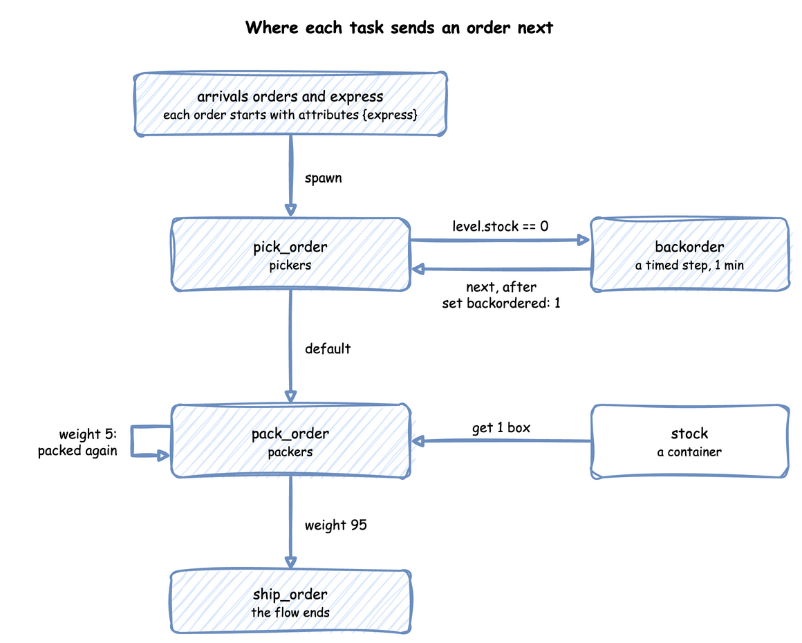
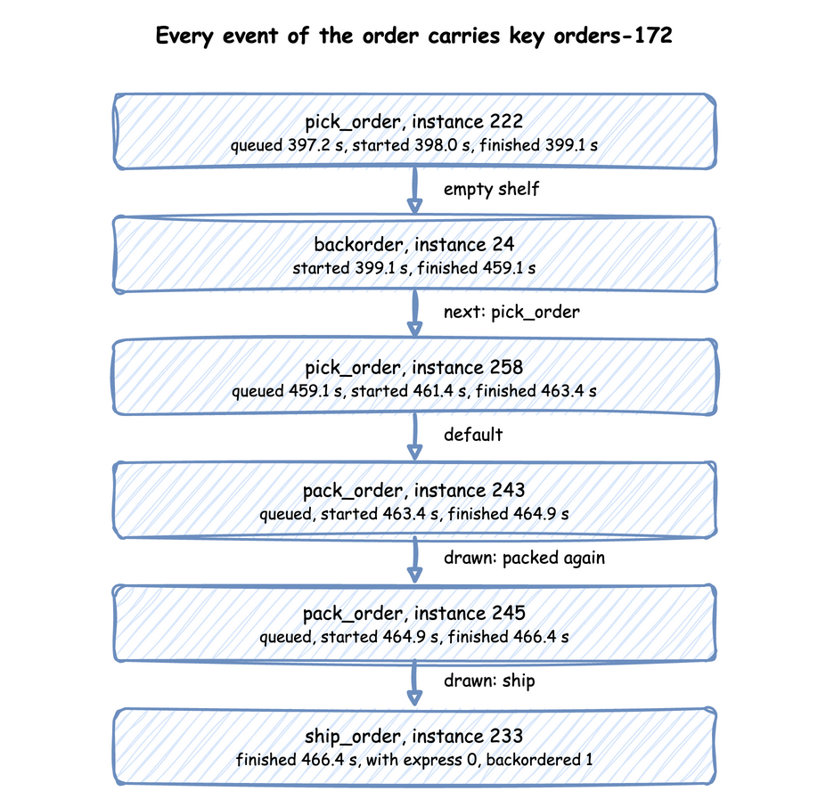

A Flow of Tasks
Until now an order was one task: it was packed and left. A real order is picked from the shelves, packed and shipped. Sometimes an item is out of stock, and sometimes a parcel fails its check and is packed again. This page asks: how do orders move through pick, pack and ship?
- Decision: how much work to plan for beyond one pick and one pack per order.
- Measures: two shares: how many orders go to backorder, and how many parcels are packed again.
- Runs: one run of an hour with the seed 42, from an order's arrival to its shipment, with the supplier modelled only as a delay.
- Assumptions: orders arrive at random, each picking time is equally likely to be anywhere from 1 to 3 seconds, and packing always takes 1.5 seconds.
What You Will Learn
This page shows how to:
- chain tasks so an order is picked, packed and shipped;
- route a share of the orders to backorder or back to packing;
- carry an attribute, such as
express, through the flow.
What You Add
This page adds three tasks in a row: pick_order, pack_order and ship_order. It also adds a backorder delay for an order picked while the shelf of boxes from Stock is empty, and an express attribute that each order carries. The shop is set up as follows:
- It has two pickers and two packers.
- A regular order arrives every 2.5 seconds on average (24 a minute,
rate: 0.4), and an express order every 10 seconds (6 a minute,rate: 0.1). - A delivery of 53 boxes comes every 100 seconds, a little more than the orders take.
- Picking time is
uniformfrom 1 to 3 seconds only to keep the example short. Common Mistakes explains why a real study fits a distribution to measured times instead, as Choosing Inputs does.
Look at the flow first:

Chain the Tasks
Choosing where an entity goes next is called routing. In desflow a task names what follows it with next. Tasks and Processes describes tasks. next takes one of three forms:
- a task name, which always leads there;
- a list of
whenrules, each a condition and a task: the first rule that holds wins, anddefaultcatches the rest; weights, which Rework shows.
A task with no next ends the order's flow. Save the files from Full Files in one folder and run the commands there.
Here the arrival loop passes the context to each task after its id. A task started by next receives the same arguments as the task before it. So every task function in the flow declares context.
| docs/snippets/tutorials/flow_of_tasks_low_level.py:chain | |
|---|---|
A Router takes the same rules as next and returns the name of the task to start. When a task finishes, its process asks the router and starts the next task as a new process, with the same entity:
In SimPy terms, a process that starts another process with env.process(...) is how one step leads to the next. SimPy and desflow describes processes.
The rule reads level.stock, the level of the container stock, at the moment picking finishes. Stores and Containers describes containers. Each name in a condition says where its value comes from: level. for a store or container, attr. for the entity's attributes, payload. for the finished task's payload, and registry["..."] for a live parameter. Task Flow lists everything a condition can use.
Every event of every task carries the order's key, orders-1, so one order can be followed through its whole flow. task names the task, and instance numbers its runs. Each task has one counter, shared by its arrivals and by next, so a re-pick after a backorder gets a new id. In the full builder file the arrival loops take the id from context.next_instance("pick_order"), and the low-level file keeps one counters entry per task.
Out of Stock
An order picked while the shelf is empty waits for the supplier for a minute, then is picked again. The wait uses no picker or packer, so backorder has a service and no resource: a timed step. It publishes started at once, with no queued event, waits the sampled time, and publishes its finished event:
next: pick_order sends the order back to an earlier task. A route back is allowed anywhere in a flow.
Rework
One parcel in 20 fails its check and is packed again. Sending work back to a task it has passed is called rework. weights chooses the next task at random, in proportion to the weights. It draws from the routing task's own random number stream, route.pack_order. So a seeded run repeats, and the choice does not change any other draw:
| docs/snippets/tutorials/flow_of_tasks_low_level.py:rework | |
|---|---|
The low-level router needs a generator to draw from: ROUTES["pack_order"].rng = sampler.generator("route.pack_order") in run, the stream the builder uses.
Carry Attributes
An order is an entity with attributes: values it carries from task to task, such as whether it is express. The arrival gives each new entity its starting attributes, and set on a task changes them when the task finishes, as backorder does with backordered: 1:
| docs/snippets/yaml/flow_of_tasks.yaml:attributes | |
|---|---|
| docs/snippets/tutorials/flow_of_tasks_low_level.py:attributes | |
|---|---|
Entity(key, arrival, attributes) is the order, created by the arrival process; the full file below shows it.
Attributes are not published. A condition reads them as attr.express, and a payload includes them only when it names them. ship_order names express and backordered, so its finished event carries both. This is orders-172, which was picked while the shelf was empty, backordered, picked again and packed twice. Every tab prints its records to the terminal, so grep finds the order's lines:

What You Get and Why
How do orders move through pick, pack and ship? Most go straight through, and a few go to backorder or are packed again. The run publishes the finished count of every task at the end, with stats: basic in the YAML file, with_stats("basic", interval=3600) in the Builder file and env.setup_stats("Shop", "basic", interval=3600) in the Low-level file. Each tab prints the four counts:
The counts are:
| Task | Finished in the hour |
|---|---|
pick_order |
1,857 |
backorder |
80 |
pack_order |
1,849 |
ship_order |
1,775 |
4.3% of picks led to backorder (80 of 1,857), and 4.0% of parcels were packed again (74 of 1,849 packs did not lead to a shipment). The weights set 5%, and this one run of the hour, with the seed 42, drew a few fewer.
Flow balance is the rule that, in a flow, each task's arrival rate follows from the rates into it and the routing weights. Every pack leads to a shipment with probability 0.95, so each order is packed 1 ÷ 0.95 = 1.05 times on average, and the packers see 5% more work than there are orders. A rework loop therefore raises utilisation, so it belongs in the load you work out before running. Queueing Basics shows why waits grow quickly near full use. Task Flow describes routing in full.
Key Takeaways
- A task names the task that follows it, by a condition or by weights.
- In a flow, each task's rate follows from the rates into it and the routing weights.
- A rework loop adds work to the resources it returns to, so include it in the load you work out before running.
Full Files
Full files
| docs/snippets/tutorials/flow_of_tasks_low_level.py | |
|---|---|
1 2 3 4 5 6 7 8 9 10 11 12 13 14 15 16 17 18 19 20 21 22 23 24 25 26 27 28 29 30 31 32 33 34 35 36 37 38 39 40 41 42 43 44 45 46 47 48 49 50 51 52 53 54 55 56 57 58 59 60 61 62 63 64 65 66 67 68 69 70 71 72 73 74 75 76 77 78 79 80 81 82 83 84 85 86 87 88 89 90 91 92 93 94 95 96 97 98 99 100 101 102 103 104 105 106 107 108 109 110 111 112 113 114 115 116 117 118 119 120 121 122 123 124 125 126 127 128 129 130 131 132 133 134 135 136 137 138 139 140 141 142 143 144 145 146 147 148 149 150 151 152 153 154 155 156 157 158 159 160 161 162 163 164 165 166 167 168 169 170 171 172 173 174 175 176 177 178 179 180 181 182 183 184 | |